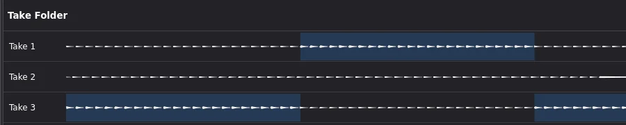
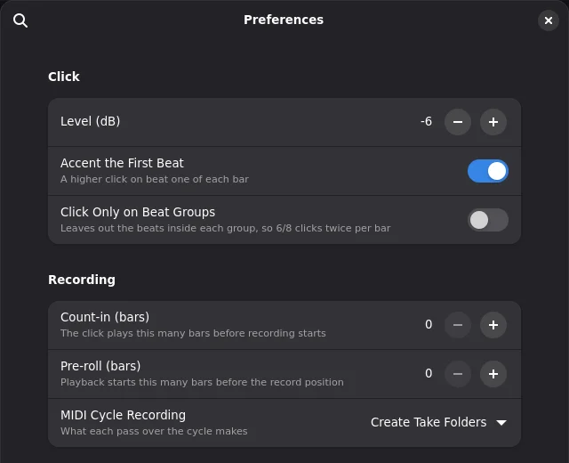

Recording
Recording a band, without the fuss
Everything between plugging in and a comped take: inputs, monitoring that stays out of the way, take folders, count-in, a tuner that reaches drop tunings, and protection for the performance you can't play again.
Getting the room ready
Before the first take, Solstice needs to know which interface you're recording through and how small a buffer it can run. First-run setup asks both, and both stay in Preferences ▸ Audio afterwards.
- One interface, one clock. Solstice connects only to the interface you choose, so a webcam microphone or a second sound card can't drift against it or hold back a small buffer.
- Buffer size trades monitoring delay against CPU load. Preferences shows the round-trip latency the audio server reports for the size you pick, in samples and milliseconds.
- Sample rate safety. If the audio server is running at a different rate from audio already in the project, Solstice won't record and tells you which rate to set, instead of quietly recording takes that play back at the wrong speed.

Inputs and arming
Each audio track takes one of 16 interface inputs, or a stereo pair. The small ○ button beside the input switches a track between mono and stereo; going stereo snaps the input to a pair, so overheads land on In 3–4 rather than a mismatched In 4–5. The Band Recording template does the assigning for you: Kick on In 1, Snare on In 2, Overheads on In 3–4, and so on down the list.
Arm tracks with their R buttons. To arm a whole drum kit, press on the first R and drag down across the rest: every button you pass takes the same state. The same works for the I (input monitoring), mute and solo buttons.
Hearing yourself
With Auto Input Monitoring on, which is the default, an armed track does what a player expects without anyone touching a button:
- stopped, it plays what's coming into its input, so the guitarist can tune and check their sound;
- playing back, it plays the take already on the track, so the band can rehearse over the last pass;
- recording, it switches to the live input.
The I button adds the live input whatever the track is doing, for anyone who'd rather always hear themselves.
Input is mixed into the track in the same audio cycle it arrives in, so what a player hears is a single buffer behind them. The catch in any DAW is plug-in delay compensation: when a look-ahead limiter on the mix bus holds everything back to stay in time, live input waits too. Low Latency Mode, in the mixer's Options menu, takes monitored tracks out of compensation and bypasses any plug-in on them that adds more than a limit you set (5 ms by default). Other tracks still play compensated, so the backing stays tight while the singer hears themselves straight away.
Recording takes, and comping the best one
Press R. With the cycle on, recording starts from the top of the cycle; pressed while the song is already playing, it drops straight in where you are. The take draws as it records, with its waveform growing across the lane, and lands as a 32-bit float WAV in the project's Audio Files folder, named after its track: "Guitar 1 #3".
Leave the cycle running and keep playing. Every pass after the first joins the same region as a take folder, named Take 1, Take 2, Take 3, with the newest one playing. Each pass is captured as it was heard, a little past the loop point, so the last note of the bar isn't clipped off by latency.

Open the folder and each take sits on its own lane. Drag across a take and that take plays over the span you dragged; click a take's name to have it play all the way through. When the comp is right, Flatten keeps only what plays: the folder becomes one region per section, each keeping the name, colour and gain, with the fades carried to the ends. Right-click any folder for "Play Take 2" and so on, to audition a whole take in context.
MIDI takes
Cycle-recorded MIDI makes take folders too, or merges every pass into one region if you'd rather build a part up layer by layer (Preferences ▸ Metronome ▸ MIDI Cycle Recording). Passes where nothing was played are skipped, and a note played up to a beat early at the top of the loop is pulled onto the downbeat where it was meant to go.
Count-in, pre-roll and the click
Count-in plays up to four bars of click before recording starts, even if the metronome is otherwise off. Pre-roll starts playback up to four bars early, so a player can come in off the song rather than off silence. Use both and the click only covers the last bars of the pre-roll.
The metronome is a short synthesised click, delayed by the same amount as the plug-in compensation so it lines up with what you hear. Beat one gets a higher click if you want it. In odd and compound meters it follows the bar's grouping, so 7/8 can be counted 2+2+3 and 6/8 clicks on its two dotted beats rather than six quavers. Set the grouping in the signature on the global track, or in Project Settings.

Takes that line up with what was played
Every interface takes a little time to get sound in and out. Solstice moves each take back by the round trip the audio server reports, plus any plug-in compensation in play, so an overdub sits where the player put it rather than a few milliseconds late.
Drivers don't always report that round trip exactly, so Solstice can measure it. Run a cable from an output of your interface to an input, choose them in Preferences ▸ Audio ▸ Measure…, and Solstice plays a short sweep out and listens for it coming back. It finds the delay by cross-correlation, copes with a cable that flips polarity, refuses a result it isn't sure of, and tells you how far the real figure was from the reported one before applying it. You can also adjust it by hand, to the sample.
A tuner that goes low enough
Press Shift+T and the Tuner window listens to the selected track's input. It reads from 40 Hz, just under the low E of a drop-tuned eight-string or a four-string bass, up to 1.5 kHz.
- A needle across ±50 cents, and a strobe band that drifts right when sharp, left when flat, and stands still when you're there.
- Green within 3 cents, yellow within 15, red beyond.
- Reference pitch from 415 to 466 Hz, for bands that tune to something other than A = 440.
- "Mute Output While Tuning" silences the speakers while the window is open.
Keys and MIDI parts
Capture as Recording (Shift+R) keeps the notes you played during the last playback, even though you weren't recording. Every pass of a cycle is kept, merged into one region. It's there for the part you played best while just running through it.
Musical Typing (Ctrl+K) turns the computer keyboard into a piano when there's no controller to hand: the home row is the white keys from middle C, the row above the black keys, Z and X shift the octave, C and V set the velocity.
When something goes wrong mid-take
Recording is where losing work hurts most, because the performance can't be played again. Solstice is built so that a slow disk or a crash costs as little as possible.
- The audio thread never touches the disk. A separate thread writes takes, with 30 seconds of buffer per armed track to ride out a drive that stalls.
- If the disk falls behind anyway, the missing audio is written as silence, so the rest of the take stays in time, and Solstice tells you how many milliseconds were lost and on which track.
- The file is playable at any moment. Its header is updated every second, so a crash leaves a usable WAV rather than a broken one.
- Takes are journalled. Each take is noted on disk as it starts; if Solstice closes before the take reaches the project, it's put back the next time you open it, with a message saying how many were recovered.
- Long takes don't hit a wall. A WAV file can't be larger than 4 GB, so a very long take carries on seamlessly into a second file.
- Closing the window while recording asks first, and a full disk ends the take with a clear message rather than silently.